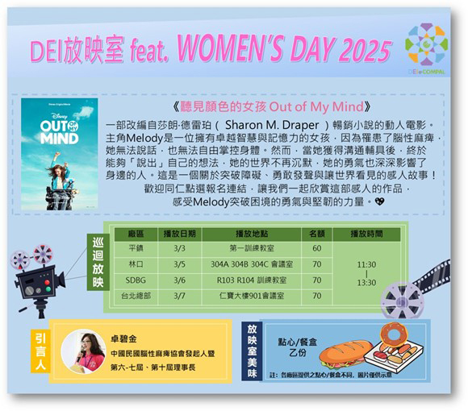
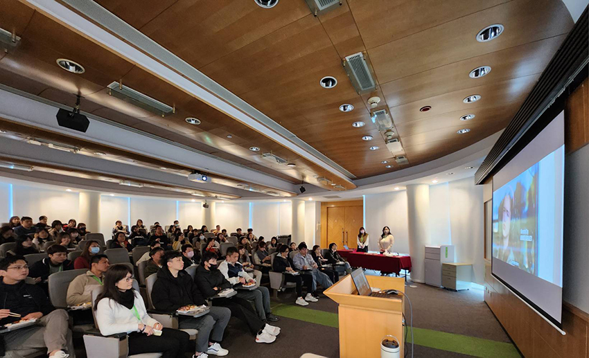
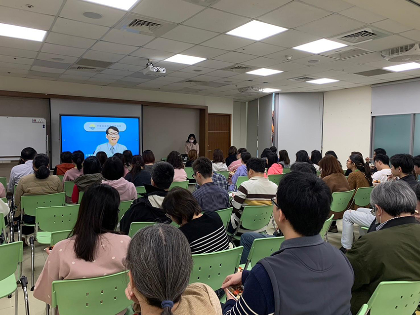
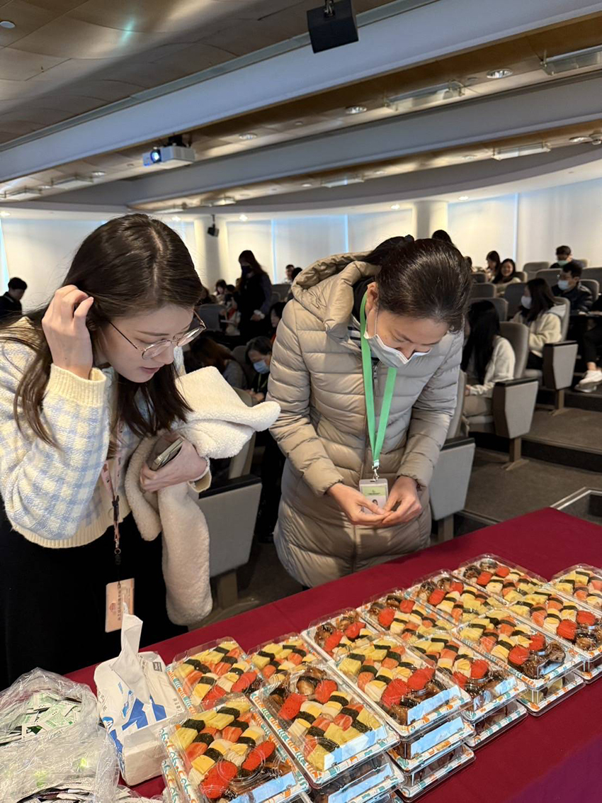

DEI放映室 feat. Women's Day 2025
員工關係部
DEI代表多元（Diversity）、平等（Equity）和共融（Inclusion），不僅是一個概念，更是公司持續推動的重要目標。去年的首屆DEI放映室獲得同仁們的熱烈迴響，因此，今年我們再次巡迴各廠區舉辦放映活動，讓DEI的精神持續發光！
|  |
今年的放映電影是《聽見顏色的女孩》，改編自莎朗·德雷珀（Sharon M. Draper）的暢銷小說。故事的主角Melody是一位11歲的小女孩，因腦性麻痺影響，她無法說話，也無法自如地控制身體，導致她的天賦經常被忽視或低估。然而，在面對層層挑戰的過程中，她展現了驚人的堅韌、努力與智慧。劇中的Melody生活在一個缺乏理解的環境中，但所幸她擁有家人、同學的陪伴與支持，這些理解與關愛，成為她勇敢前行的重要力量！
為了讓大家更深入了解腦性麻痺，我們特別邀請中華民國腦性麻痺協會擔任活動引言，透過他們的分享，讓我們更加認識這個議題，也再次體會到——無論身心狀態如何，每個人都有屬於自己的潛力與獨特的生命價值！
這次活動總共邀請到218位同仁熱情參與！感謝大家的投入，讓活動更加圓滿與精彩！不僅獲得99.3%的滿意度，還收到許多感動人心的回饋：
💬 「很喜歡透過電影欣賞方式，更多了解 DEI！」
💬 「活動真的很棒，電影感觸很深，期待未來能持續舉辦！」
💬 「多元共融的議題越來越重要，感謝公司安排活動，讓我們跟上世界趨勢！」
DEI 放映室，我們下次見！🎬✨
|  |
|  |
|  |